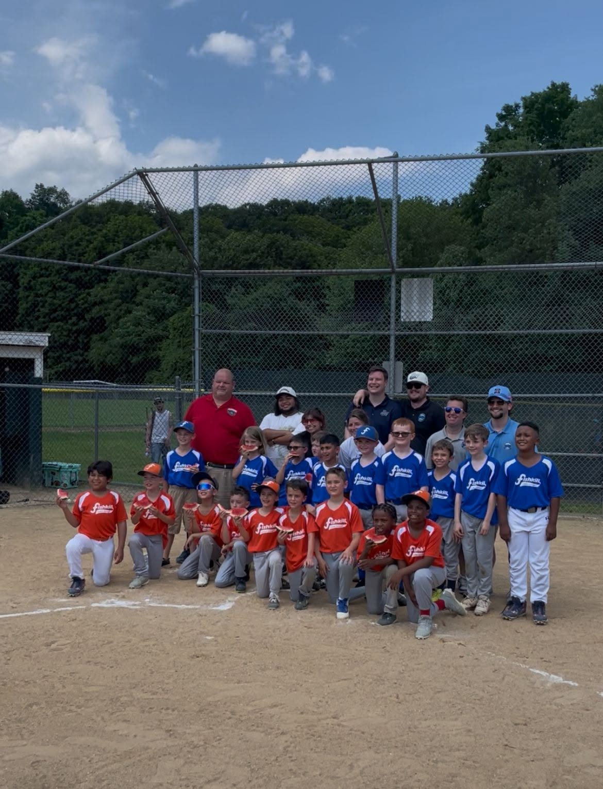

Who can register?
League ages 4–7: Children league age 4–7 can register regardless of where they live or attend school. If your child joins Fishkill Little League by league age 7, they can keep playing with us as they get older by registering and participating every spring without a break, subject to Little League’s other eligibility requirements.
League ages 8–16: If your home address is within Fishkill Little League’s boundary, your child can qualify even if they attend school outside it. A school address within the boundary can also qualify a child who lives outside it.
Check your home or school address
Enter the exact street address in the Little League Finder and look for Fishkill LL. League boundaries can cross town and ZIP code lines.
Players who have played continuously with Fishkill Little League since league age 7 and siblings of qualifying players may also be eligible under Little League’s Regulation II. Email the league if you’re unsure about the result.
Find your division · Beacon schools · East Fishkill schools · Fishkill schools
Youth baseball and softball for Beacon families
Students enrolled in the Beacon City School District can qualify through school. That includes Glenham Elementary, J.V. Forrestal Elementary, Sargent Elementary, South Avenue Elementary. Use your school address in the Little League Finder to check.
Youth baseball and softball for East Fishkill families
Gayhead Elementary is in Hopewell Junction and serves families in Hopewell Junction, East Fishkill, and Stormville. Students at Gayhead and John Jay High School can qualify through school enrollment.
Brinckerhoff Elementary is in Fishkill and serves families in Fishkill, Hopewell Junction, and East Fishkill. Students can qualify using the school address. The district’s elementary school maps help identify your assigned school. Use the Little League Finder for league boundaries.
Fishkill Little League plays home games in Fishkill at Shepheard Memorial Park. Compare baseball divisions, softball divisions, or coed FUN-damentals and Tee Ball.
Fishkill Elementary and St. Mary’s School
Both schools are in Fishkill, and students can qualify through school enrollment. That includes St. Mary’s students who live outside Fishkill, such as in Cold Spring or Newburgh.
See fees and register · Email the league about eligibility